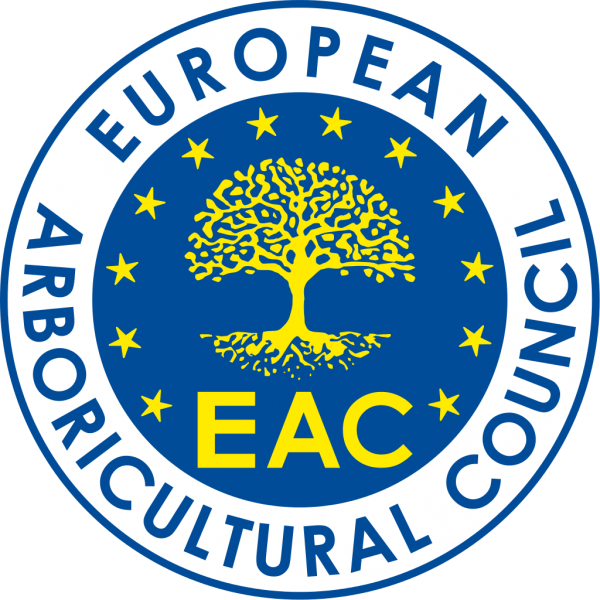

Ons team
Mijn naam is Jamie Vyncke en vanuit mijn passie voor bomen heb ik dit bedrijf opgericht.
Ondertussen zijn we gegroeid naar een leuk team met uitsluitend vakmannen.
Zowel particulieren, tuinaannemers en gemeentes kunnen van onze
expertise gebruik maken. Wij staan dagelijks voor je klaar met dezelfde passie!

Europees gecertificeerd boomverzorger!